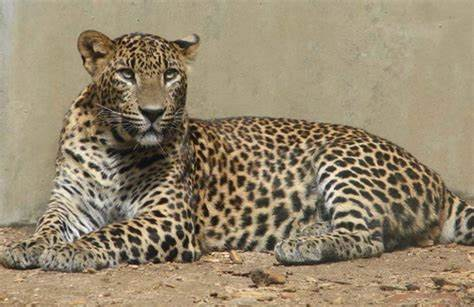

Salvajes
Animales Salvajes. Cuando se habla de animales salvajes todos tienen la impresión que son animales peligrosísimos: se piensa en leones en la selva, osos, tigres, etc. Pero no todos los animales salvajes son peligrosos. De hecho, todos los animales fueron salvajes alguna vez. Los gatos, los perros, los caballos,... todos eran animales salvaje antes de ser domesticados por el hombre. De hecho, todavía quedan especies de caballos salvajes en el mundo y no por ello son peligrosos para el hombre. Los animales salvajes son sencillamente animales que viven en la naturaleza y que sobreviven por sus propios medios: cazando, pescando o comiendo vegetales. Cómo ves, el termino de animal salvaje poco tiene que ver con la primera impresión que nos viene a la cabeza al pensar en ellos.
Los animales se pueden clasificar en dos categorías salvajes y domesticos. Los animales salvajes se caracterizan por sobrevivir por sus propios medios ya sea cazando, pescando o comiendo vegetales. Estos animales en su mayoría representan riesgo y peligrosidad. Existen un sinnúmero de animales salvaje. Entre los mas comunes lo son, el tigre, el elefante, el leon, la zebra entre otros. La selva es el habitat mas comun para este tipo de animal. Son los animales que el hombre ha habituado a vivir con los humanos. Se comenta que el primer animal doméstico fue el perro, pues tiene sus ancestros en los lobos. Los perros, los gatos, las vacas, las cabras y las ovejas, por ejemplo, son animales domésticos y habitan también en las granjas de la ciudad. Muchos de estos animales se les adopta como mascotas propiciando en la mayoria de los casos un lazo afectivo hacia estos. La peculiaridad de estos animales es el poder interactuar con el ser humano sin hacernos dano. Por tal razon se les llama animales domésticos.
Pantera

Leopardo Blanco

Leopardo
Jabali
Domesticos
Se entiende por animales domésticos a todos aquellos que han atravesado un proceso de domesticación, o sea, que han aprendido a convivir con el ser humano a un punto tal que en muchos casos les costaría llevar una existencia alejada de la sociedad humana. Se llama domesticación al proceso de acostumbrar a una especie animal o vegetal de vida silvestre a los términos de la existencia humana, o sea, a convivir con el ser humano y adecuarse al tipo de actividades que éste desempeña. Es un proceso iniciado hace miles de años, en los albores de nuestra especie, cuando el descubrimiento de la agricultura condujo a la necesidad de animales robustos que brindaran al ser humano la fuerza de la que su cuerpo carecía. Este proceso fue clave, además, en la invención de la ganadería y de otras actividades semejantes.
También se domesticaron especies vegetales, como el maíz y el trigo, que se adaptaron a proliferar en espacios controlados por el ser humano, en lugar de sus entornos naturales. Este proceso alteró para siempre sus cursos evolutivos y sometió a las especies a procesos de selección artificial de acuerdo a nuestras necesidades como especie. Hoy en día, los animales domésticos habitan con nosotros en ambientes rurales y urbanos, sirviéndonos de compañía, alimento, transporte o fuerza de trabajo. A cambio, les ofrecemos una alimentación sin esfuerzos ni competencia, un hábitat seguro y ciertas comodidades, especialmente a aquellos que consideramos acompañantes cotidianos, como los perros y los gatos.
Perro
Gato
Conejo
Oveja